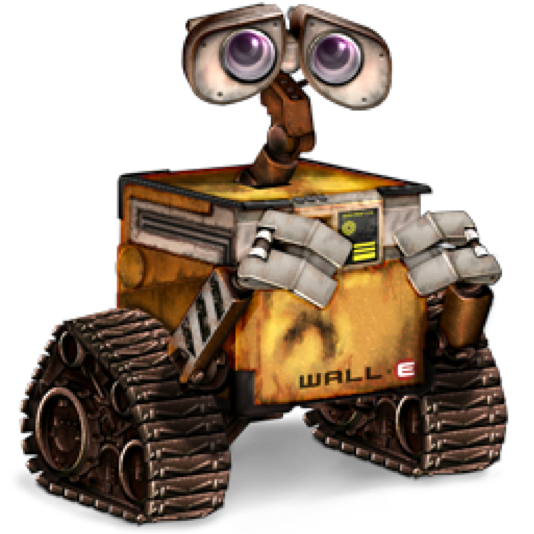

Toy Story: É conhecido por ser o primeiro longa-metragem dos estúdios Pixar e também o primeiro da
história
do cinema totalmente feito por computação gráfica.
2001
Monstros S. A.: O filme contra a história sobre monstros que assustam crianças para conseguir seus
gritos e
gerar energia para seu mundo.
2003
Procurando Nemo: Vencedor do Oscar de Melhor Filme de Animação, apresenta um mundo onde peixes e outros
seres marinhos vivem numa sociedade semelhante à de seres humanos.
2004
Os Incríveis: Foi indicado a 4 Oscars, e venceu 2: Melhor Filme de Animação e Melhor Edição de Som.
Conta a
história de Beto e Helena Pera, seres humanos dotados de super poderes, que se casaram e agora têm três
filhos: Violeta, Flecha e o bebê Zezé, a cidade de Metroville.
2007
Ratatouille: Conta a história de Rémy, um rato vivendo em Paris que sonha em se tornar um chef de
cozinha
Grupo de Pesquisa Pixar
O Grupo de Pesquisa Pixar foi criado em 2004 com o propósito de:
Desenvolver tecnologias
Promover a inovação
Fornecer consultoria
Participar de comunidades de pesquisa externas
Alguns Filmes de Curta-Metragem da Pixar:
lou
Piper
Day & Night
Air Mater
Party Central
Galerias
Vídeos
Áudios
Carros 2:
Divertida Mente:
Imagens

WALL-E: Conta a história de um robô chamado WALL-E, criado no ano de 2100 para limprar a terra
coberta
por lixo
UP: Conta as aventuras que Carl (um idoso viúvo com seu sonho de se mudar para o magnifico Paraíso
das
Cachoeiras, na Venezuela) enfrenta ao conhecer Russel (um garoto escoteiro amante da natureza com
seu
sonho de protegê-la), Muntz (o explorador difamado buscando restabelecer sua reputação), Kevin (a
ave
tropical) e Dug (um golden retriever falante).
VALENTE: Merida é uma habilidosa arqueira e a impetuosa filha do Rei Fergus e da Rainha Elinor.
Determinada a trilhar o seu próprio destino, Merida desafia um costume ancestral, se negando a casar
com
o primogênito de um dos quatro clãs.